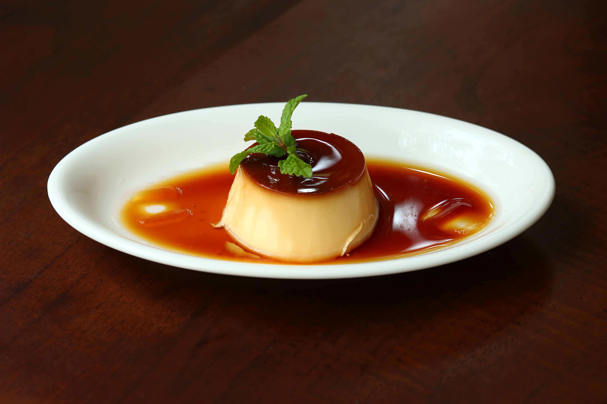

Back to Home
Pudim de Leite Condensado

Description
Pudim de leite condensado is the most beloved dessert in Brazil: a smooth,
creamy custard made with sweetened condensed milk, topped with a glossy
layer of golden caramel.
It is baked in a water bath, which keeps the texture silky, and it needs
to rest in the fridge before serving. Plan ahead, because it tastes best
the next day.
Ingredients
- 1 can (395 g) sweetened condensed milk
- 1 can of whole milk (use the empty condensed milk can to measure)
- 3 large eggs
- 1 cup granulated sugar, for the caramel
- 1/4 cup water, for the caramel
Steps
- Preheat the oven to 180°C (350°F).
-
Make the caramel: heat the sugar and water in a saucepan over medium
heat, without stirring, until it turns golden brown.
-
Pour the hot caramel into a pudding mold with a central hole and tilt
the mold so the caramel coats the bottom and sides.
-
In a blender, mix the condensed milk, the whole milk, and the eggs for
about 1 minute.
- Pour the mixture into the caramel-coated mold.
-
Cover the mold with foil and place it inside a larger pan filled with
hot water, to make a water bath.
-
Bake for 1 hour, or until a toothpick inserted in the center comes out
clean.
-
Let it cool to room temperature, then refrigerate for at least 4 hours.
-
Run a knife around the edges, flip the mold onto a serving plate, and
serve cold.